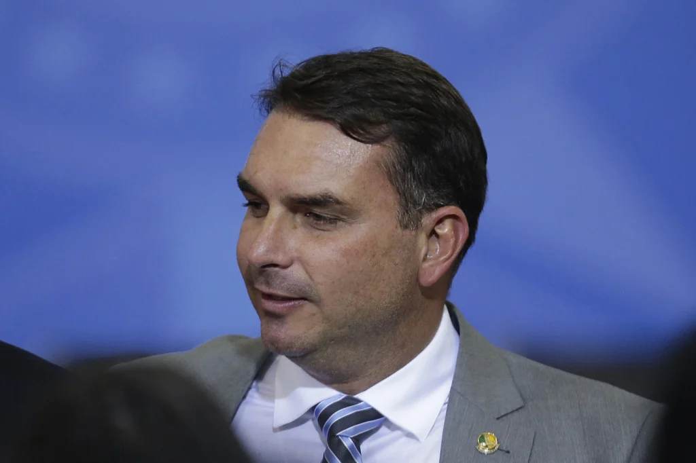

Flávio Bolsonaro anuncia saída do Republicanos
O senador Flávio Bolsonaro (sem partido) anunciou sua desfiliação do partido Republicanos nesta quarta-feira, 26. “Comuniquei há pouco minha desfiliação do Republicanos ao meu amigo e presidente do partido, Marcos Pereira. Muito obrigado a todos do partido pelo tratamento excepcional, transparente e respeitoso de todos os dias. Contem comigo para traçarmos, juntos, o futuro do nosso Brasil”, registrou o senador nas redes sociais. Junto com a legenda, Flávio postou uma foto ao lado do presidente do Republicanos.

Noticiado por: Estadão (22 mai 2021 - 15h32)
Câmara aprova medida que limita renda para beneficiários do BPC; texto vai ao Senado
A Câmara dos Deputados aprovou nesta quarta-feira (26) a medida provisória que fixa em um quarto de salário mínimo a renda per capita máxima para que uma família possa receber o Benefício de Prestação Continuada (BPC). O texto segue para o Senado.
O BPC é pago mensalmente e equivale a um salário mínimo (atualmente R$ 1.100). Têm direito ao benefício idosos e pessoas com deficiência que comprovem não ter meios próprios de se sustentar nem auxílio da família.
Pelo texto aprovado pela Câmara, haverá a partir de 2022 uma regra escalonada para permitir a ampliação do teto para até meio salário mínimo, de acordo com condições de vulnerabilidade.
Noticiado por: Estadão (14 mai 2021 - 18h01)
Prefeito de SP é investigado por lavagem de dinheiro
O novo prefeito de São Paulo, Ricardo Nunes (MDB), é investigado pela Polícia Civil por suspeita de participar de um esquema de lavagem de dinheiro desviado da Prefeitura no período em que foi vereador. Os investigadores apuram detalhes sobre depósitos na conta da empresa do emedebista, de sua mulher e de seus filhos, após alerta de órgãos de controle.
As evidências foram levantadas pelo Conselho de Controle de Atividades Financeiras (Coaf), que também mapeou movimentações financeiras suspeitas de entidades comandadas por ex-funcionários do prefeito. Elas gerenciavam creches da cidade, mas parte dos recursos recebidos da Prefeitura foi parar em contas de seus próprios gestores, depois de passar por contas de empresas que, para a polícia, são de fachada.
Noticiado por: Estadão (24 mai 2021 - 13h09)
PSDB protocola ação para que Bolsonaro use máscara
Segundo o PSDB, quando o presidente resiste publicamente fazer uso da máscara facial durante eventos institucionais de governo, como inauguração de obras públicas, ele
abusa do Poder e acaba por interferir na Administração Pública, tornando-a ineficiente.
A legenda diz que Bolsonaro, "em flagrante desvio de finalidade nos atos e ações de governo, viola o Direito fundamental à vida e à saúde, na medida em que, de modo contumaz,
desrespeita todas as medidas e orientações emanadas pela Administração Pública Federal (Ministério da Saúde e Anvisa, dentre outras) e expressamente incentiva a população
brasileira a não as obedecer".
A legenda alega que não há "qualquer tipo de moralidade" na conduta do presidente, que "trata a vida e a saúde de centenas de milhares de brasileiros com absoluto descaso
e até certo desdém ao proferir expressões chulas, incompatíveis com o posto".